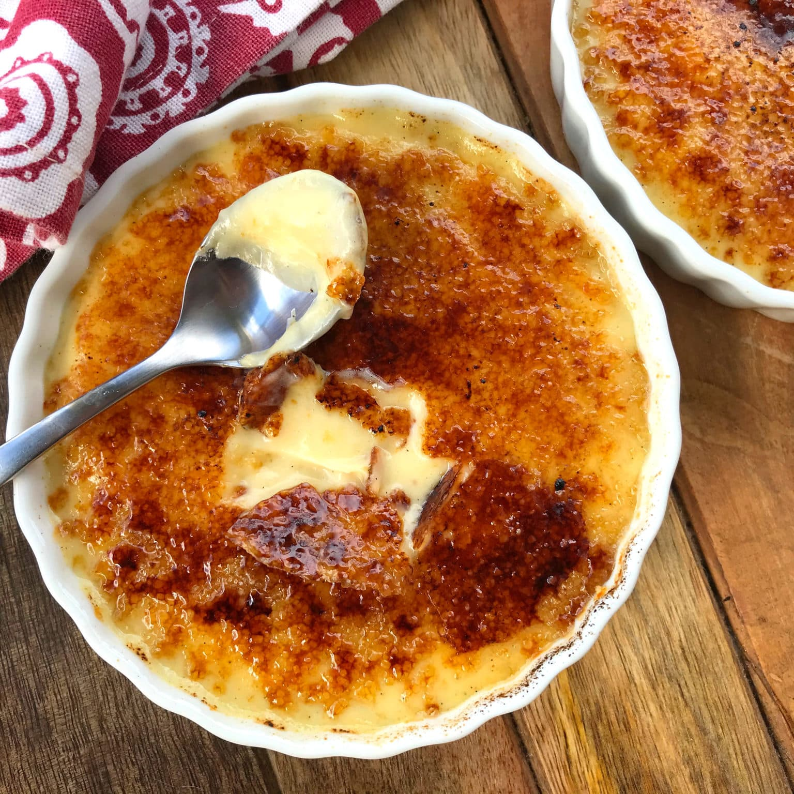

Crema Catalana

Ingredients
- 240 ml coconut milk
- 60 ml unsweetened plant milk e.g. soy or almond milk.
- 1 tbsp cornstarch or vanilla pudding powder
- 2 tbsp raw cane sugar or other sugar
- 1 tsp pure vanilla extract
- ¼ tsp turmeric optional for color
- ½ tsp agar powder
Instructions
- In a small cup, whisk together plant milk and agar until the powder is completely dissolved.
- In a saucepan, combine coconut milk, cornstarch, raw cane sugar, vanilla and turmeric. Then stir in the agar mixture and bring to a boil, stirring constantly, for 1-2 minutes until the mixture thickens nicely
- Then pour into 3 small 10 cm quiche pans and let cool in the refrigerator for 1-2 hours.
- Once the pudding is completely set, remove from the refrigerator and sprinkle about 1-2 teaspoons of sugar on top of each pudding. Caramelize the sugar with a blowtorch to create a crisp surface.